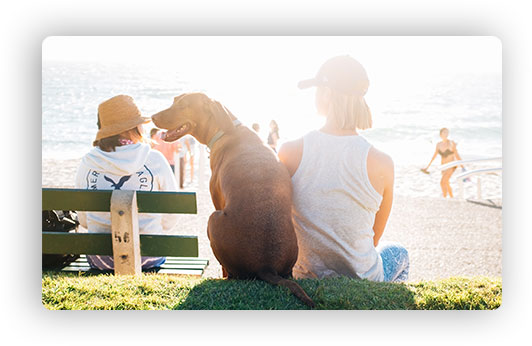

Питомник породистых животных прямо рядом с домом

Животные как дети - им нужны мы.
О питомнике
Наш питомник - не просто дом для животных, а семья из разных пород собак и кошек.
-
Лучшие представители своей породы
-
Сбалансированный рацион питания питомца
-
Ежедневный уход и тренировки
-
Веселье, свежий воздух и хорошая компания
Наши породы
Французский бульдог

Идеальный вариант городской собаки - они входят в тройку самых популярных собак на планете. Любят короткие прогулки и хорошо поспать.
Посмотреть щенков →Золотистый ретривер

Добродушные, ориентированные на людей собаки. Они отлично ведут себя с детьми и больными. Могут быть повадырями.
Посмотреть щенков →
Пудель

Активные и компанейские собаки. Любят много гулять, обладают отличным чувством юмора.
Посмотреть щенков →Отзывы хозяев
Татьяна Зверева
Хочу выразить огромную благодарность Вам за это чудо - малыша, который появился у нас в семье. Деликатный, милый, ласковый и нежный белоснежный Уник, в которого я влюбилась с первого взгляда, увидев его фотографию на сайте Вашего питомника. Очень умный малыш!
Больше отзывов у нас в группе в ВК
Всё о животных
Мы ведем активный блог про наших животных в социальных сетях - присоединяйтесь к нам. Полезные материалы про обучение, дрессировку, питание.


Контакты
АДРЕС
г. Санкт-Петербург, ул.Кирочная 61
petshelp@mail.ru
РЕЖИМ РАБОТЫ
Каждый день с 10.00 до 22.00
ТЕЛЕФОН
+7 (925) 256 78 96
Мы принимаем звонки с 10.00 до 21.00